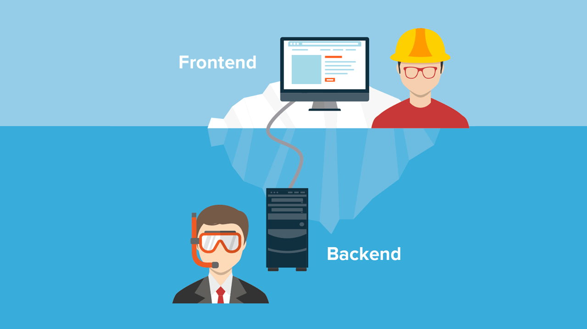
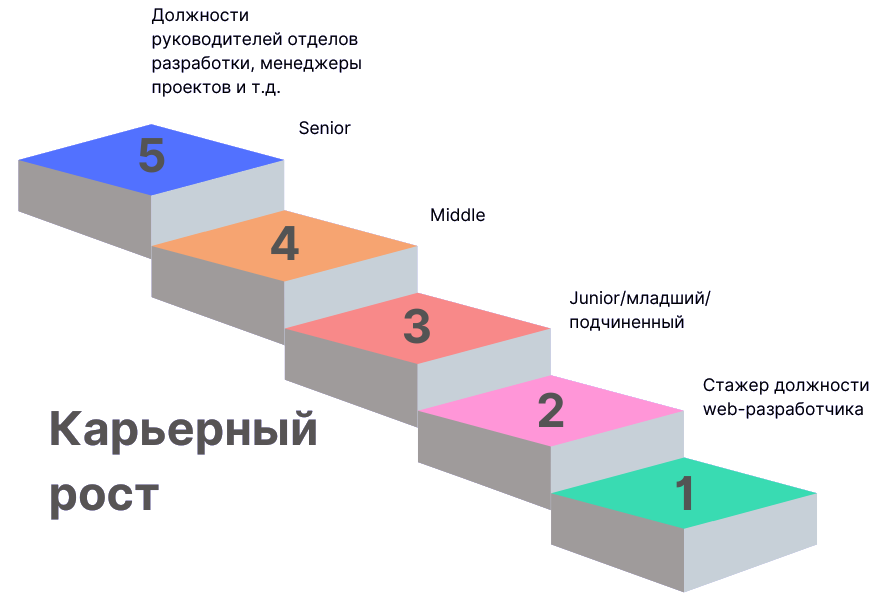

Характеристика профессии
Web-разработчик пишет программную составляющую сайтов, создает динамические web-страницы, web-интерфейсы для работы с базами данных.
Web-разработка – самое популярное направление в программировании. Согласно исследованию Stack Overflow за 2020 год, большинство разработчиков считают себя frontend, backend или fullstack-разработчиками. Но лидируют в рейтинге те, кто занимается backend-разработкой.
Профессия web-разработчика относится к профессиям исключительно умственного (творческого или интеллектуального труда). В процессе работы важна деятельность сенсорных систем, внимания, памяти, активизация мышления и эмоциональной сферы.
Сфера деятельности: «Человек – Знаковая система», так как эта работа связана с различной знаковой информацией: цифрами, чертежами, схемами. Необходимо уметь работать с компьютерами, индикаторами, документами, графикой. Для того чтобы успешно работать в этой сфере деятельности, у человека должно быть логическое мышление, внимание, усидчивость и хорошая память. Дополнительный тип профессии: «Человек – Художественный образ», профессия ориентирована на работу, связанную с созданием, проектированием, моделированием пространства и художественных образов.
Средствами производства web-разработчика являются информационные машины и функциональные возможности человека.
Процесс web-разработки можно разделить на три направления:
|
 |
Frontend-разработчик – разработчик, который создает интерфейс, видимую часть приложения. Когда мы заходим на сайты, мы обычно нажимаем на кнопки или отправляем товар в корзину. За все это отвечает frontend. Ну а если мобильная версия сайта по бокам вылезает за экран – виноват frontend-разработчик.
Backend-разработчик – отвечает за внутренности, серверную часть сайта. Если вы поставили галочку напротив «китайские чайники до 2 000 рублей», а сайт показал гаечные ключи – передайте привет backend-разработчику.
Fullstack-разработчик – многостаночник, который умеет и backend, и frontend. Делает он все немного медленнее, а навыки до идеала прокачать сложно. Зато в курсе всех процессов – от и до.
Базовые знания и навыки, необходимые web-разработчику:
Верстка и программирование. Для начала нужно изучить три языка: HTML, CSS и JavaScript – это необходимая база. HTML отвечает за разметку страницы, CSS за стили и внешний вид, а JavaScript – за то, как элементы сайта реагируют на действия пользователя.
Браузерные API. Предположим, вы делаете сервис стриминга музыки. Вы хотите, чтобы трек останавливался, когда пользователь снимает Bluetooth-наушники. В JavaScript нет средств работы с Bluetooth, но разные браузеры предоставляют их в виде так называемых API. Это интерфейсы для взаимодействия с чем-либо, в нашем примере с Bluetooth-устройством.
Фреймворки. Они облегчают разработку больших проектов, делают их развитие и поддержку менее затратными. Многие фреймворки (например, Angular или Vue) позволяют думать об интерфейсе как о наборе отдельных компонентов. Например, создав компонент кнопки однажды, его можно использовать в других местах сайта или даже в других проектах и не писать код заново.
Взаимодействие с сервером. Нужно понимать, как устроено общение клиента и сервера. Это позволяет получать или отправлять данные и настроить взаимодействие со сторонним web-сервисом, если это необходимо.
Условия труда: специалист проводит весь день в помещении. Рабочая поза – преимущественно сидя. В работе использует ручные средства труда, а также персональный компьютер с возможностью выхода в Интернет.
Режим работы зависит от компании, клиента и срочности поставленной задачи, но примерно оно составляет 9 часов в день.
Возможность карьерного роста: первое – стажер должности web-разработчика. Стажер учится. Его главная задача – набираться знаний, решать задачи под присмотром, и – набивать шишки. Почти каждый стажер удаляет базу, промахивается окном или решает заново давно закрытую задачу. Разумеется, 6ез вреда для боевых проектов. Junior способен решать задачи самостоятельно. Он часто советуется со старшими, но вопросы он задает совсем не стажерские. Middle – специалист, который способен решить сам любую типовую для отрасли задачу. Senior знает «свой стек» досконально, с готовностью изучает и применяет новые технологии, и работает как наставник. Далее могут идти должности руководителей отделов разработки и менеджеры проектов.

Социальный пакет у web-разработчика (может меняться в зависимости от компании):
- ДМС (добровольное медицинское страхование);
- спорт, абонементы на различные занятия;
- питание;
- корпоративные праздники;
- обучение, посещение тренингов и курсов.
Средняя заработная плата web-разработчика в разных городах России:
- в Москве медианная зарплата web-разработчика – 174 000 ₽;
- в Санкт-Петербурге – 150 000 ₽;
- в городах-миллионниках – 100 000 ₽;
- в остальных городах – 104 000 ₽.
В данной профессии, как и в любой другой, существуют свои плюсы и минусы.
Плюсы:
 востребованность
на рынке труда;
востребованность
на рынке труда;
 творческая
работа, так как каждая задача уникальна, и для ее решения существует несколько
способов;
творческая
работа, так как каждая задача уникальна, и для ее решения существует несколько
способов;
 возможность
совмещения с учебой;
возможность
совмещения с учебой;
 не всегда
требуется диплом;
не всегда
требуется диплом;
 возможность
стать специалистом в молодом возрасте;
возможность
стать специалистом в молодом возрасте;
 свобода в
принятии решений (как решать ту или иную задачу, решает сам web-разработчик);
свобода в
принятии решений (как решать ту или иную задачу, решает сам web-разработчик);
 возможность
удаленной работы;
возможность
удаленной работы;
 работа в
одной из наиболее перспективных отраслей современности;
работа в
одной из наиболее перспективных отраслей современности;
 возможность
работать с заказчиками и работодателями со всего мира;
возможность
работать с заказчиками и работодателями со всего мира;
 высокий
доход;
высокий
доход;
 нет
ограничения в профессиональном развитии.
нет
ограничения в профессиональном развитии.
Минусы:
ненормированный рабочий день;
сидячая работа;
большая нагрузка на зрение, что может привести к его ухудшению;
иногда приходится работать «в стол» и переделывать, так как требования меняются на ходу;
необходимо постоянно обучаться, потому что все быстро устаревает, но это минус только для тех, кто не любит учиться.